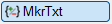
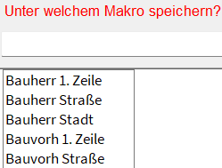
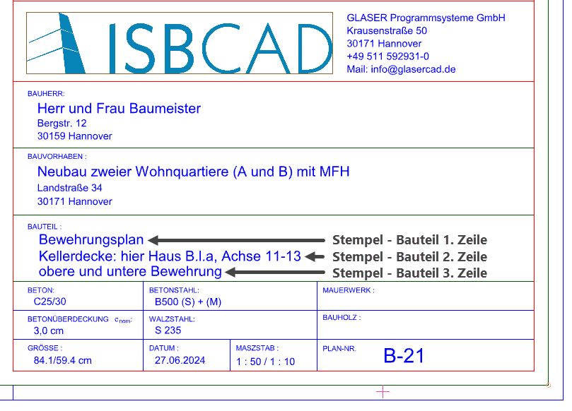
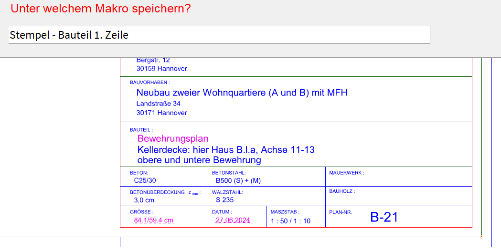
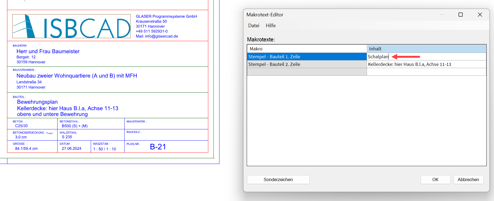
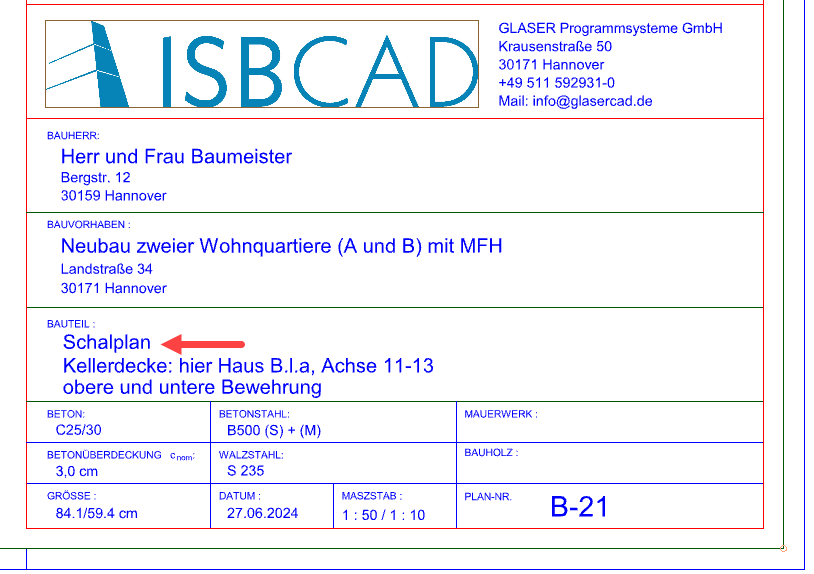

")
")
Mit dieser Funktion können Sie einem beliebigen Text einen Makrotext zuweisen und Zuweisungen auflösen. In der Zeichnung werden alle Texte, die mindestens einen Makrotext enthalten, in der Farbe für Markieren hervorgehoben.
Alle Makrotexte, die Sie erzeugen, können Sie im Makrotext-Editor einsehen, bearbeiten und löschen. Im Editor können Sie auch neue Makrotexte erzeugen, auf die Sie in Texteingaben zugreifen können.
Siehe auch: Verwenden von Makrotexten
Makrotext erzeugen
§Klicken Sie einen Text an, der variabel sein soll. [Welchen Text konvertieren?].
Falls im Makrotext-Editor Makrotexte definiert sind, werden sie in einer Liste unter der Abfrage angezeigt.
§Führen Sie einen der folgenden Schritte aus: [Unter welchem Makro speichern?].
a)Klicken Sie in der Liste einen Makrotext an, dem im Makrotext-Editor kein Textinhalt zugewiesen ist. Sie erhalten eine Meldung mit der Information, dass der unter [Welchen Text konvertieren?] angeklickte Text dem Makrotext zugewiesen wird. Bestätigen Sie die Meldung mit OK.
 |
b)Geben Sie die Bezeichnung für den Makrotext ein, dem der zuvor angeklickte Text zugeordnet werden soll, und bestätigen Sie mit der Eingabetaste.
c)Klicken Sie einen Text in der Zeichnung an, um ihn in die Eingabe zu übernehmen. Sie können den Text bearbeiten, indem Sie zusätzliche Inhalte hinzufügen. Beim Anklicken eines weiteren Textes wird die aktuelle Eingabe durch den neuen Text ersetzt. Bestätigen Sie die Eingabe mit der Eingabetaste.
-Die Definition ist abgeschlossen. Der Makrotext und dessen Textinhalt können im Makrotext-Editor bearbeitet werden.
-Texte, denen bereits ein Makrotext zugewiesen ist, können nicht ausgewählt werden. Sie erhalten in diesem Fall eine Meldung mit weiteren Informationen. Bestätigen Sie die Meldung mit OK. Sie können die Zuweisung auflösen (siehe weiter unten) und anschließend einen neuen Makrotext vergeben.
Makrotext auflösen
Durch das Auflösen werden der Makrotext und dessen Textinhalt nicht aus dem Makrotext-Editor gelöscht. Es wird nur die Zuweisung auf der Zeichnung entfernt, wobei der Textinhalt in einen normalen Text umgewandelt wird. Ist der Makrotext mehrfach auf der Zeichnung vorhanden, wird nur der angeklickte Text aufgelöst.
§Klicken Sie unter der Abfrage auf auflösen. [Welchen Text konvertieren?].
§Klicken Sie den Text an, der aufgelöst werden soll. [Welchen Text auflösen?].
Der Text wird aufgelöst und in der Farbe für Elemente im Hintergrund angezeigt.
Beispiel: Text in Makrotext konvertieren
Im Plankopf sollen die Angaben für das Bauteil in Makrotexte umgewandelt werden.
 |
§Klicken Sie den Text Bewehrungsplan an. [Welcher Text?].
§Geben Sie den Text Stempel - Bauteil 1. Zeile in die Eingabe ein und bestätigen Sie mit der Eingabetaste. [Unter welchem Makro speichern?].
 |
§Wiederholen Sie den Vorgang für den Text Kellerdecke: hier Haus B.l.a, Achse 11-13 und geben Sie Stempel - Bauteil 2. Zeile ein. [Welcher Text?]; [Unter welchem Makro speichern?].
Sie haben nun zwei Makrotexte erstellt "Stempel - Bauteil 1. Zeile" und "Stempel - Bauteil 2. Zeile" und diesen die Texte "Bewehrungsplan" und "Kellerdecke: hier Haus B.l.a, Achse 11-13" zugeordnet.
§Wenn Sie jetzt im Makrotext-Editor den Text Bewehrungsplan in z. B. Schalplan ändern und mit OK bestätigen, wirkt sich diese Änderung im gesamten Plan aus.
 |
Im Makrotext-Editor wird der Text "Bewehrungsplan" in "Schalplan" geändert. |
 |
Der Makrotext "Stempel - Bauteil 1. Zeile" wird auf der gesamten Zeichnung durch den neuen Textinhalt "Schalplan" ersetzt. |